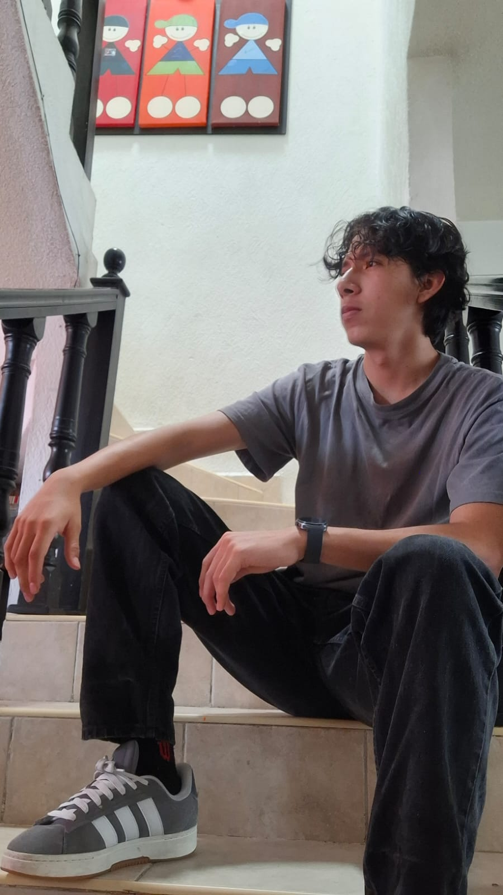

¿Quién soy?
Soy José Emilio Sánchez Muñiz, mexicano, estudiante universitario, hijo, hermano y amigo. Me considero una persona curiosa, que busca aprender, crecer y mejorar constantemente, tanto en lo personal como en su entorno.
Me gusta ser alguien en quien los demás puedan confiar, una persona con quien puedan reír, hablar de sus problemas y mostrarse tal como son, sin sentir que serán juzgados. No pretendo tener todas las respuestas ni ser perfecto; reconozco mis errores y considero que aceptar nuestras imperfecciones es parte fundamental del crecimiento personal.
Mis principales valores son la autenticidad, la confianza y la fe, entendida no solamente desde lo religioso, sino también como la esperanza de que las cosas pueden mejorar y de que siempre existe algo por lo cual seguir adelante.
Lo que me motiva es seguir construyéndome como persona y contribuir al bienestar de quienes forman parte de mi vida. Me gustaría que los demás me reconocieran como alguien genuino, confiable y con quien puedan establecer relaciones basadas en el respeto, la reciprocidad y la confianza.